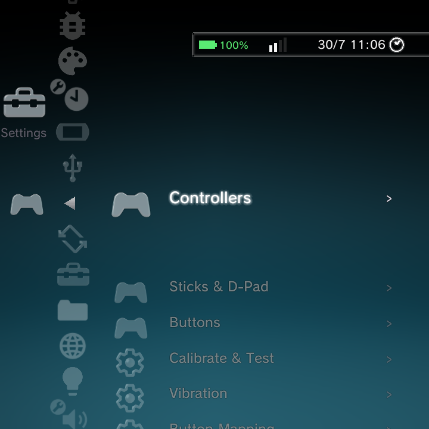
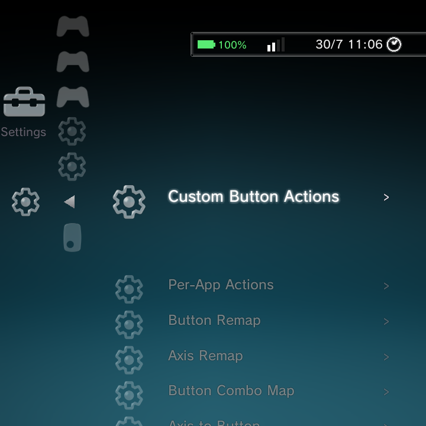

GammaOS gives you deep control over your gamepad: swap buttons, invert sticks, tune the D-pad, calibrate analog drift, add rumble, and remap any button to another button, key, app, or action. It is all under Settings > Gamepad Settings.

Gamepad Settings is organized into sections: Controllers, Sticks & D-Pad, Buttons, Calibrate & Test, Vibration, Button Mapping, and Touch & Mouse. The same options are available in the Nano menu, in the ATV Settings, and in LineageParts, and every change applies live.
Controllers
| Option | What it does |
|---|---|
| Controller Enable | Turns the GammaOS controller layer on (off by default) |
| Merge Controllers | Combines all connected pads into one virtual controller (on by default) |
| Hide Source Device | Hides the raw controllers from apps so only the merged one is seen (on by default) |
| Devices to Capture | Limit which devices the layer grabs, by name |
| Virtual Device Name | The name apps see for the merged controller |
Turn Controller Enable on before the other options take effect. It starts the GammaOS controller service that does the merging, swapping, and remapping.
Sticks & D-Pad
| Option | What it does | Default |
|---|---|---|
| Invert Left Stick | Flip the left stick axes | Off |
| Invert Right Stick | Flip the right stick axes | Off |
| Analog to D-Pad | Make the left stick act as the D-pad | Off |
| D-Pad to Analog | Make the D-pad act as the left stick | Off |
| D-Pad Threshold | How far the stick must move to count as a D-pad press | 50 |
| Global Sensitivity | Overall analog stick sensitivity | 0 |
Buttons
- ABXY Swap swaps A with B and X with Y (off by default), handy for switching between Xbox-style and Nintendo-style layouts.
- Button Prompts choose which glyphs the on-screen prompts use.
- OK Button sets which button confirms.
Calibrate & Test
- Test Controller opens a live screen that lights up each button, stick, and trigger as you press it, so you can confirm everything is detected.
- Calibrate Analog Sticks walks you through centering and setting the range of each stick to correct drift and dead zones.
Vibration
| Option | What it does | Default |
|---|---|---|
| PWM Enable | Use the device's own vibration motor when a controller has no rumble | On |
| PWM Intensity | How strong that vibration is (0 to 255) | 200 |
| Vibration Device | Which device receives rumble | Auto |
Button remapping
Under Button Mapping you can reassign inputs. This is the part people ask about most.

| Tool | What it does |
|---|---|
| Button Remap | Remap one button to another button or key. Press the button you want to change, then pick the new target from a list of controller buttons and keys. |
| Axis Remap | Remap one analog axis to another (for example left stick X to right stick X). |
| Button Combo Map | Make a two-button combo emit a single button or key (for example A + B sends the Guide button). |
| Axis to Button | Turn a trigger or axis crossing a threshold into a button press. |
| Custom Button Actions | Bind a button to an action: another key, launch an app, set a value, and more. |
| Per-App Actions | Scope a set of mappings to one app, so a game can have its own layout. |
Remapping is applied live: when you save, the controller layer reloads and your new mapping takes effect right away, no reboot needed. Your layout also persists across reboots.
Where else you can remap
The same remapping is available from three places, all writing the same settings:
- In Nano, here under Gamepad Settings > Button Mapping.
- In the Settings app (on the TV/ATV build), under the Gamepad section.
- In LineageParts (the non-TV build), which has a live key-capture dialog with a full button catalog and an app picker.
In-emulator binding (DraStic Nano)
DS games have their own button binding, separate from the system remapper above and set under the DraStic overlay's Menu > Controls:
- Save State and Load State (quick-save/quick-load slot 0) can be bound to any button and work even with the overlay closed.
- L3 and R3 are now freely rebindable.
- Binding a key to one action clears it from any other action automatically, so you never leave a button doing two jobs.
For the full binding walkthrough see DraStic controls and DraStic Nano.
List navigation in DSi and Minima
Beyond remapping, the DSi and Minima home themes gained the same fast list navigation the XMB already had:
- L1 and R1 page-skip through blocks of items in game and app lists.
- Holding a direction accelerates the scroll the way XMB does (the DSi carousel keeps its own cadence).
- Lists wrap around, so pressing past the last item returns you to the first.
Touch & Mouse
- Screen Map maps controller input to on-screen touch zones, so a pad can drive touch-only apps.
- Mouse Mode turns the pad into a mouse pointer. Hold the configured combo to toggle it, then the stick moves the cursor. You can tune Stick Speed, D-Pad Speed, Boost, and Scroll Speed.
Where to go next
- Controls for what every button does in the menu.
- Slide & Rotate for swivel and slide devices.